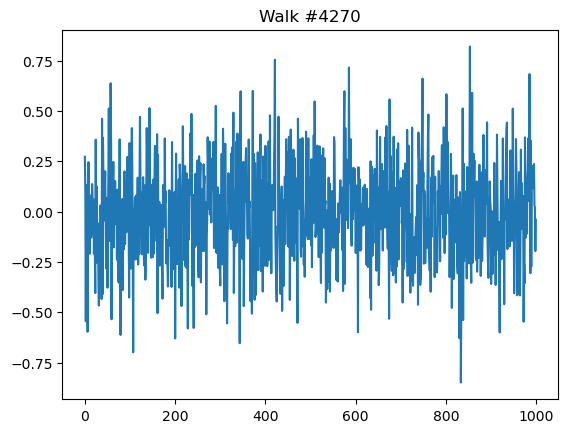

import numpy as npNB: NumPy Continued
Quick Refresher on Shape
The shape of an array is represented a tuple, e.g. (n, m) for a 2D array.
- The length of the tuple is number of dimensions (i.e. axes).
- The values of the tuple are the number of elements in each dimension (axis).
Consider the array foo:
foo = np.ones((6,4))fooarray([[1., 1., 1., 1.],
[1., 1., 1., 1.],
[1., 1., 1., 1.],
[1., 1., 1., 1.],
[1., 1., 1., 1.],
[1., 1., 1., 1.]])It was created with the \(2\) dimensions. * The first dimension, axis 0, has \(6\) elements. In this case, these elements are arrays. * The second dimension, axis 1, has \(4\) elements. Its elements are scalars (numbers in this case).
The shape of foo[0] is \(4\). It contains \(1\) axis with \(4\) elements.
foo[0], foo[0].shape(array([1., 1., 1., 1.]), (4,))It has a shape of \(1\) and not \(4 \times 1\) because it is a vector, not a matrix.
SO, there is a difference between a vector and a 1-column matrix.
Reshaping
If we want to make it into a 1-column matrix, we need to reshape it using np.reshape().
Note that the first value of the shape argument is \(-1\). This means use the length of the vector that is passed to it.
## np.reshape?foo2 = np.reshape(foo[0], (-1, 1))foo2, foo2.shape(array([[1.],
[1.],
[1.],
[1.]]),
(4, 1))When indexing an array, think of the positions of the comma-delimitted tuple as the axis.
The values are the element offsets in the containing array. The
foo[2:, 2:]
## ^ ^
## 0 1 <- AXIS NUMBERarray([[1., 1.],
[1., 1.],
[1., 1.],
[1., 1.]])Use Case
Sometimes, you need to convert vectors into 1-column matrices to make certain linear algebraic functions work.
Consider two random variables, \(x\) and \(y\).
x = np.random.randn(100)
y = np.random.randn(100)We can fit a regression line using the normal equation, which appears in this week’s homework.
\(\begin{aligned} \hat\beta_i=(x^Tx)^{−1}x^Ty \end{aligned}\)
Here is a standward way of expressing it in NumPy:
get_beta1 = lambda x, y: (np.linalg.inv(x.T.dot(x))) * (x.T.dot(y))However, it will fail if we pass it our two variables, x and y.
The reason is that it expects x to be a matrix, since it is designed to handle n-dimension predictor variables, usually represented as \(\textbf{X}\).
get_beta1(x, y)LinAlgError: 0-dimensional array given. Array must be at least two-dimensionalThe revised function will work with a vector as x:
\(\hat\beta_i = \large\frac{1}{x^Tx} \small(x^Ty)\)
get_beta2 = lambda x, y: (1 / x.T.dot(x)) * (x.T.dot(y))get_beta2(x, y)-0.024001726229633015We can fix the problem in the general case by converting our vector into a matrix using np.reshape().
x_as_matrix = np.reshape(x, (-1, 1))get_beta1(x_as_matrix, y)array([[-0.02400173]])get_beta1(x_as_matrix, y)[0][0]-0.024001726229633015get_beta1(x_as_matrix, y)[0][0] == get_beta2(x, y)TrueArray-Oriented Programming
Using NumPy arrays enables you to express many kinds of data processing tasks as concise array expressions without writing loops.
This practice of replacing explicit loops with array expressions is referred to by some people as vectorization.
Vectorized array operations are often significantly faster than their pure Python equivalents.
They are also visually concise and elegant, although loops have the virtue of visualizing what’s under the hood in an algorithm.
Expressing Conditional Logic as Array Operations
np.where()
The np.where function is a vectorized version of the ternary expression x if condition else y.
Suppose we had a boolean array and two arrays of values:
xarr = np.array([1.1, 1.2, 1.3, 1.4, 1.5])
yarr = np.array([2.1, 2.2, 2.3, 2.4, 2.5])
cond = np.array([True, False, True, True, False])result = [(x if c else y) for x, y, c in zip(xarr, yarr, cond)]result[1.1, 2.2, 1.3, 1.4, 2.5]Here is the vectorized version:
result = np.where(cond, xarr, yarr)resultarray([1.1, 2.2, 1.3, 1.4, 2.5])arr = np.random.randn(4, 4)arrarray([[ 0.71377598, 1.04448549, 0.45741241, 0.5140798 ],
[-0.82391345, -1.0197481 , 1.4060606 , 0.62358815],
[ 0.02333953, 0.88690155, -0.22585342, 0.56837897],
[-0.26536153, 0.40478114, -1.47759854, 2.19904386]])arr > 0array([[ True, True, True, True],
[False, False, True, True],
[ True, True, False, True],
[False, True, False, True]])np.where(arr > 0, 2, -2)array([[ 2, 2, 2, 2],
[-2, -2, 2, 2],
[ 2, 2, -2, 2],
[-2, 2, -2, 2]])np.where(arr > 0, 2, arr) # set only positive values to 2array([[ 2. , 2. , 2. , 2. ],
[-0.82391345, -1.0197481 , 2. , 2. ],
[ 2. , 2. , -0.22585342, 2. ],
[-0.26536153, 2. , -1.47759854, 2. ]])Mathematical and Statistical Methods
Statistical computations are aggregate functions apply to vectors within an array.
In a 2D array, they can be applied to rows or columns, i.e. axis \(0\) or axis \(1\).
Let’s create an array of random values. We can think of it is a table of observations and random variables.
arr = np.random.randn(5, 4)arrarray([[-0.91177405, 0.38092718, 1.24694083, -0.99704974],
[-0.56115404, -0.93705255, -1.21305553, -0.64927237],
[-1.19457832, 1.83434483, 2.27671145, 0.26169299],
[-0.84889108, -0.83572139, -0.57758317, 1.58662962],
[ 0.19319093, 1.82049028, 0.27858004, -1.73954701]]).mean()
arr.mean()-0.029308553860170082np.mean(arr)-0.029308553860170082arr.mean(axis=1)array([-0.07023894, -0.84013362, 0.79454274, -0.1688915 , 0.13817856])arr.mean(axis=0)array([-0.66464131, 0.45259767, 0.40231872, -0.3075093 ]).sum()
arr.sum()-0.5861710772034017Row wise aggregration
arr.sum(axis=0)array([-3.32320656, 2.26298836, 2.01159362, -1.5375465 ])arr.mean(axis=1)array([-0.07023894, -0.84013362, 0.79454274, -0.1688915 , 0.13817856])Column-wise aggregration
.cumsum()
arr = np.array([0, 1, 2, 3, 4, 5, 6, 7])arr.cumsum()array([ 0, 1, 3, 6, 10, 15, 21, 28])arr = np.array([[0, 1, 2], [3, 4, 5], [6, 7, 8]])arrarray([[0, 1, 2],
[3, 4, 5],
[6, 7, 8]])arr.cumsum(axis=0)array([[ 0, 1, 2],
[ 3, 5, 7],
[ 9, 12, 15]])arr.cumprod(axis=1)array([[ 0, 0, 0],
[ 3, 12, 60],
[ 6, 42, 336]])Methods for Boolean Arrays
.sum()
Since booleans are \(0\)s and \(1\), we can sum them to get a total truth count.
arr = np.random.randn(100)
(arr > 0).sum() # Number of positive values52bools = np.array([False, False, True, False]).any()
bools.any()True.all()
bools.all()FalseSorting
.sort()
arr = np.random.randn(6)arrarray([ 0.02890946, -0.72562683, -0.64281354, 0.64857369, -0.4963519 ,
1.87264121])arr.sort()arrarray([-0.72562683, -0.64281354, -0.4963519 , 0.02890946, 0.64857369,
1.87264121])arr = np.random.randn(5, 3)arrarray([[-1.23306247, -1.07817007, -0.88382084],
[-0.6643465 , 1.25664102, -1.30704653],
[ 0.4346452 , 1.83475168, 0.05308342],
[-0.45280164, 1.55820042, 0.45709586],
[-1.11638437, 0.49329283, 0.19578709]])##| collapsed: false
##| jupyter: {outputs_hidden: false}
arr.sort(1)##| collapsed: false
##| jupyter: {outputs_hidden: false}
arrarray([[-0.53948413, -0.29471714, 0.24943325],
[-1.89394191, -0.14603575, 0.52316275],
[-1.37442146, -0.3170239 , 0.72752286],
[-1.36313182, -0.11840338, 0.49537141],
[-0.91273224, -0.10046984, 0.65676513]])##| collapsed: false
##| jupyter: {outputs_hidden: false}
large_arr = np.random.randn(1000)
large_arr.sort()
large_arr[int(0.05 * len(large_arr))] # 5% quantile-1.567894136313308##| collapsed: false
##| jupyter: {outputs_hidden: false}
0.05 * len(large_arr)50.0Unique and Other Set Logic
np.unique()
##| collapsed: false
##| jupyter: {outputs_hidden: false}
names = np.array(['Bob', 'Joe', 'Will', 'Bob', 'Will', 'Joe', 'Joe'])
np.unique(names)array(['Bob', 'Joe', 'Will'], dtype='<U4')##| collapsed: false
##| jupyter: {outputs_hidden: false}
sorted(set(names))['Bob', 'Joe', 'Will']##| collapsed: false
##| jupyter: {outputs_hidden: false}
ints = np.array([3, 3, 3, 2, 2, 1, 1, 4, 4])
np.unique(ints)array([1, 2, 3, 4])np.in1d()
Tests whether each element of a 1-D array is also present in a second array.
##| collapsed: false
##| jupyter: {outputs_hidden: false}
values = np.array([6, 0, 0, 3, 2, 5, 6])
np.in1d(values, [2, 3, 6])array([ True, False, False, True, True, False, True])File Input and Output with Arrays
np.save()
Save an array to a binary file in NumPy .npy format.
Automatically adds the .npy file extension.
##| collapsed: false
##| jupyter: {outputs_hidden: false}
arr = np.arange(10)
np.save('some_array', arr)np.load()
##| collapsed: false
##| jupyter: {outputs_hidden: false}
np.load('some_array.npy')array([0, 1, 2, 3, 4, 5, 6, 7, 8, 9])np.savetxt()
Save an array to a text file.
## np.savetxt?np.savetxt('some_array.txt', arr)## !more some_array.txtnp.savez()
Save several arrays into a single file in uncompressed .npz format.
##| collapsed: false
##| jupyter: {outputs_hidden: false}
np.savez('array_archive.npz', a=arr, b=arr)##| collapsed: false
##| jupyter: {outputs_hidden: false}
arch = np.load('array_archive.npz')
arch['b']array([0, 1, 2, 3, 4, 5, 6, 7, 8, 9])##| collapsed: false
##| jupyter: {outputs_hidden: false}
np.savez_compressed('arrays_compressed.npz', a=arr, b=arr)Clean up …
##| collapsed: false
##| jupyter: {outputs_hidden: false}
!rm some_array.npy
!rm some_array.txt
!rm array_archive.npz
!rm arrays_compressed.npzLinear Algebra
.dot()
Dot product of two arrays. Specifically, - If both a and b are 1-D arrays, it is inner product of vectors (without complex conjugation). - If both a and b are 2-D arrays, it is matrix multiplication, but using matmul() or a @ b is preferred. - If either a or b is 0-D (scalar), it is equivalent to multiply() and using numpy.multiply(a, b) or a * b is preferred. - If a is an N-D array and b is a 1-D array, it is a sum product over the last axis of a and b. - If a is an N-D array and b is an M-D array (where M>=2), it is a sum product over the last axis of a and the second-to-last axis of b:
dot(a, b)[i,j,k,m] = sum(a[i,j,:] * b[k,:,m])##| collapsed: false
##| jupyter: {outputs_hidden: false}
x = np.array([[1., 2., 3.], [4., 5., 6.]])
y = np.array([[6., 23.], [-1, 7], [8, 9]])##| collapsed: false
##| jupyter: {outputs_hidden: false}
x, y(array([[1., 2., 3.],
[4., 5., 6.]]),
array([[ 6., 23.],
[-1., 7.],
[ 8., 9.]]))##| collapsed: false
##| jupyter: {outputs_hidden: false}
yarray([[ 6., 23.],
[-1., 7.],
[ 8., 9.]])##| collapsed: false
##| jupyter: {outputs_hidden: false}
x.dot(y)array([[ 28., 64.],
[ 67., 181.]])##| collapsed: false
##| jupyter: {outputs_hidden: false}
np.dot(x, y)array([[ 28., 64.],
[ 67., 181.]])##| collapsed: false
##| jupyter: {outputs_hidden: false}
np.dot(x, np.ones(3))array([ 6., 15.])In NumPy, the @ operator means matrix multiplication.
##| collapsed: false
##| jupyter: {outputs_hidden: false}
x @ np.ones(3)array([ 6., 15.])np.linalg.inv()
##| collapsed: false
##| jupyter: {outputs_hidden: false}
from numpy.linalg import inv, qr
X = np.random.randn(5, 5)
mat = X.T.dot(X)
inv(mat)array([[ 82.23753613, -189.34702802, 57.89427716, -86.97294656,
68.51814145],
[-189.34702802, 441.92546046, -133.60834562, 202.37323804,
-160.52735198],
[ 57.89427716, -133.60834562, 40.98838836, -61.30726732,
48.29124514],
[ -86.97294656, 202.37323804, -61.30726732, 93.2165725 ,
-73.66323218],
[ 68.51814145, -160.52735198, 48.29124514, -73.66323218,
58.66394059]])##| collapsed: false
##| jupyter: {outputs_hidden: false}
mat.dot(inv(mat))
q, r = qr(mat)##| collapsed: false
##| jupyter: {outputs_hidden: false}
rarray([[-4.00031019e+00, 1.48047378e-02, 4.60703932e+00,
-1.62642596e+00, -1.12523384e+00],
[ 0.00000000e+00, -2.48637846e+00, -4.06882033e+00,
-2.42319594e+00, -6.51048292e+00],
[ 0.00000000e+00, 0.00000000e+00, -1.90679466e+00,
-2.73436486e+00, -1.86167868e+00],
[ 0.00000000e+00, 0.00000000e+00, 0.00000000e+00,
-1.26311289e+00, -1.59449990e+00],
[ 0.00000000e+00, 0.00000000e+00, 0.00000000e+00,
0.00000000e+00, 4.89916328e-03]])Pseudorandom Number Generation
np.random.normal()
##| collapsed: false
##| jupyter: {outputs_hidden: false}
samples = np.random.normal(size=(4, 4))
samplesarray([[ 0.0332678 , 0.89782644, -0.5453413 , -0.36360055],
[ 1.09036779, -0.52316507, 0.81150253, 0.18801634],
[-2.09205564, 0.4811635 , 0.52681007, -1.0989904 ],
[-0.0138388 , -0.46380505, -0.32371458, 0.5047839 ]])##| collapsed: false
##| jupyter: {outputs_hidden: false}
from random import normalvariate
N = 1000000
%timeit samples = [normalvariate(0, 1) for _ in range(N)]
%timeit np.random.normal(size=N)949 ms ± 22 ms per loop (mean ± std. dev. of 7 runs, 1 loop each)
39.9 ms ± 2.09 ms per loop (mean ± std. dev. of 7 runs, 10 loops each)##| collapsed: false
##| jupyter: {outputs_hidden: false}
np.random.seed(1234)##| collapsed: false
##| jupyter: {outputs_hidden: false}
rng = np.random.RandomState(1234)##| collapsed: false
##| jupyter: {outputs_hidden: false}
rng.randn(10)array([ 0.47143516, -1.19097569, 1.43270697, -0.3126519 , -0.72058873,
0.88716294, 0.85958841, -0.6365235 , 0.01569637, -2.24268495])Example: Random Walks
Let simulate a random walk. The walk will be represented as a vector.
We’ll do it first as loop, then with vectorization.
Loops
##| collapsed: false
##| jupyter: {outputs_hidden: false}
import random
position = 0
walk = [position] # initialize the walk
steps = 1000
for i in range(steps):
step = 1 if random.randint(0, 1) else -1 # Coin toss
position += step
walk.append(position)import matplotlib.pyplot as plt##| collapsed: false
##| jupyter: {outputs_hidden: false}
plt.figure()
plt.plot(walk[:100]);
Vectors
##| collapsed: false
##| jupyter: {outputs_hidden: false}
np.random.seed(12345)##| collapsed: false
##| jupyter: {outputs_hidden: false}
nsteps = 1000
draws = np.random.randint(0, 2, size=nsteps)
steps = np.where(draws > 0, 1, -1)
walk2 = steps.cumsum()plt.plot(walk[:100]);
##| collapsed: false
##| jupyter: {outputs_hidden: false}
walk2.min(), walk2.max()(-3, 31)Simulating Many Random Walks at Once
##| collapsed: false
##| jupyter: {outputs_hidden: false}
nwalks = 5000
nsteps = 1000##| collapsed: false
##| jupyter: {outputs_hidden: false}
draws = np.random.randint(0, 2, size=(nwalks, nsteps)) # 0 or 1
steps = np.where(draws > 0, 1, -1)
walks = steps.cumsum(1)drawsarray([[1, 0, 1, ..., 1, 0, 1],
[1, 0, 0, ..., 0, 0, 0],
[1, 0, 0, ..., 1, 1, 0],
...,
[1, 1, 0, ..., 0, 1, 1],
[1, 1, 1, ..., 0, 0, 1],
[0, 0, 0, ..., 0, 1, 1]])##| collapsed: false
##| jupyter: {outputs_hidden: false}
walksarray([[ 1, 0, 1, ..., 8, 7, 8],
[ 1, 0, -1, ..., 34, 33, 32],
[ 1, 0, -1, ..., 4, 5, 4],
...,
[ 1, 2, 1, ..., 24, 25, 26],
[ 1, 2, 3, ..., 14, 13, 14],
[ -1, -2, -3, ..., -24, -23, -22]])##| collapsed: false
##| jupyter: {outputs_hidden: false}
walks.max(), walks.min()(138, -133)##| collapsed: false
##| jupyter: {outputs_hidden: false}
hits30 = (np.abs(walks) >= 30).any(1)
hits30array([False, True, False, ..., False, True, False])##| collapsed: false
##| jupyter: {outputs_hidden: false}
hits30.sum() # Number that hit 30 or -303410##| collapsed: false
##| jupyter: {outputs_hidden: false}
crossing_times = (np.abs(walks[hits30]) >= 30).argmax(1)
crossing_times.mean()498.8897360703812##| collapsed: false
##| jupyter: {outputs_hidden: false}
steps = np.random.normal(loc=0, scale=0.25, size=(nwalks, nsteps))Feel free to experiment with other distributions for the steps other than equal-sized coin flips. You need only use a different random generator method, like standard_normal to generate normally distributed steps with some mean and standard deviation:
draws = 0.25 * rng.standard_normal((nwalks, nsteps)) # Walks: observations, Steps: featuressample_walk = np.random.choice(len(draws))
plt.plot(draws[sample_walk])
plt.title(f"Walk #{sample_walk}");